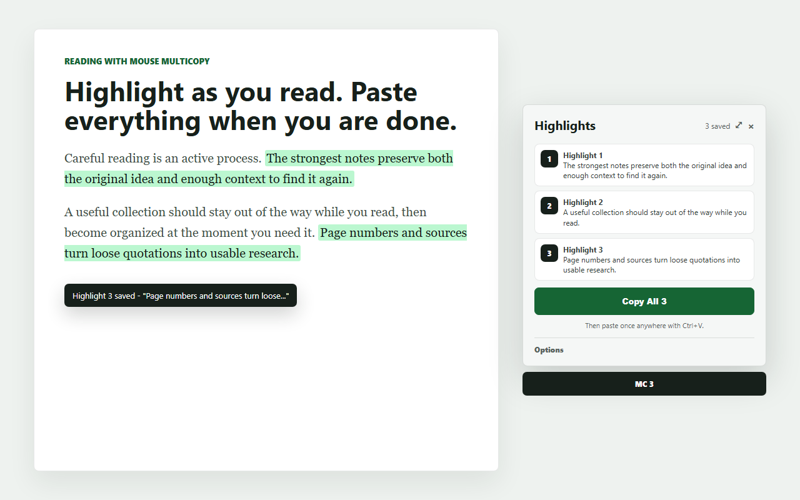

A faster clipboard for web reading
Mouse MultiCopy
Highlight more. Paste once.
Save paragraph after paragraph while you read, then copy the whole collection into Word, Notepad, email, or wherever your work continues.
Public store releases are currently under review.

The whole workflow
Read normally. Keep everything worth keeping.
-
1
Highlight
Select useful text on any ordinary webpage.
-
2
Keep reading
Each new selection becomes the next saved highlight.
-
3
Paste once
Copy the collection and paste it wherever you need it.
Simple first, powerful when needed
Your highlights stay organized without interrupting your reading.
A small confirmation tells you exactly what was saved. The movable palette stays out of the way until you need to copy, paste, reorder, rename, or remove an individual highlight.
- Copy every highlight in its original order
- Separate sessions for different tasks
- Optional page numbers and source details
- Configurable limits and duplicate protection
Private by design
Your reading stays on your device.
Mouse MultiCopy stores highlights and settings locally in your browser. No account is required. Saved text is not sold or sent to an external server.
Read the privacy policyOne reading session. One clean paste.
Mouse MultiCopy is coming to Chrome and Microsoft Edge.
View the project on GitHub